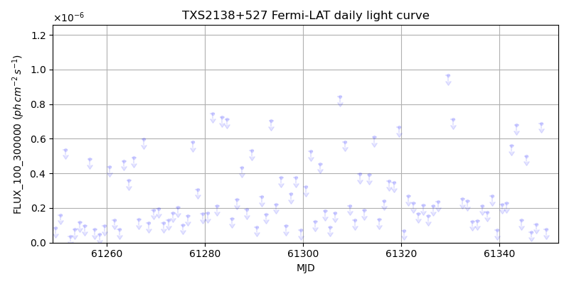
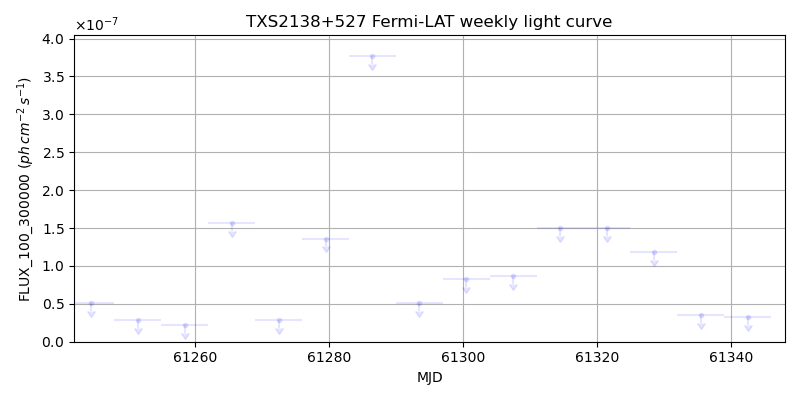
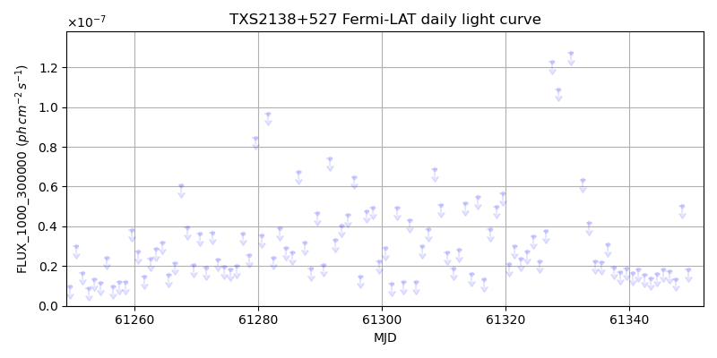
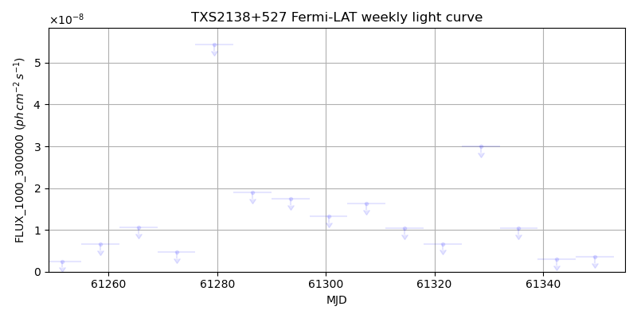

LAT Lightcurve site: https://fermi.gsfc.nasa.gov/ssc/data/access/lat/msl_lc/source/TXS_2138p527
NED: Query
Time of last update of this page: UT: 2026-11-06 16:27 (MJD: 61350.686)
| Property | Value |
|---|---|
| R.A. | 21:39:53.52 |
| Dec. | 53:00:18.0 |
| z | 0.000 |
| 3FGL SpectrumType | |
| 3FGL PL Index | -1.00 |
| 3FGL Flux_100_300000 | -1.00e+00 |
| 3FGL Flux_1000_300000 | -1.00e+00 |
| 3FGL Flux >200 GeV | -1.00e+00 |
| 3FGL Extrap. Crab >200 GeV | -1.00 |
| 3FGL Flux After EBL Absorption >200GeV | -1.00e+00 |
| 3FGL EBL Crab Fraction >200GeV | -1.00 |

| MJD | dMJD | Flux | dFlux | Frac3FGL | FracCrab>200GeV | EBLFracCrab>200GeV |
|---|---|---|---|---|---|---|
| 61345.50 | 0.50 | 5.00e-07 | 0.00e+00 | 0.00 | 0.00 | -0.00 |
| 61346.50 | 0.50 | 6.19e-08 | 0.00e+00 | 0.00 | 0.00 | -0.00 |
| 61347.50 | 0.50 | 1.07e-07 | 0.00e+00 | 0.00 | 0.00 | -0.00 |
| 61348.50 | 0.50 | 6.89e-07 | 0.00e+00 | 0.00 | 0.00 | -0.00 |
| 61349.50 | 0.50 | 7.60e-08 | 0.00e+00 | 0.00 | 0.00 | -0.00 |

| MJD | dMJD | Flux | dFlux | Frac3FGL | FracCrab>200GeV | EBLFracCrab>200GeV |
|---|---|---|---|---|---|---|
| 61314.50 | 3.50 | 1.50e-07 | 0.00e+00 | 0.00 | 0.00 | -0.00 |
| 61321.50 | 3.50 | 1.50e-07 | 0.00e+00 | 0.00 | 0.00 | -0.00 |
| 61328.50 | 3.50 | 1.18e-07 | 0.00e+00 | 0.00 | 0.00 | -0.00 |
| 61335.50 | 3.50 | 3.47e-08 | 0.00e+00 | 0.00 | 0.00 | -0.00 |
| 61342.50 | 3.50 | 3.22e-08 | 0.00e+00 | 0.00 | 0.00 | -0.00 |

| MJD | dMJD | Flux | dFlux | Frac3FGL | FracCrab>200GeV | EBLFracCrab>200GeV |
|---|---|---|---|---|---|---|
| 61345.50 | 0.50 | 1.82e-08 | 0.00e+00 | 0.00 | 0.00 | -0.00 |
| 61346.50 | 0.50 | 1.74e-08 | 0.00e+00 | 0.00 | 0.00 | -0.00 |
| 61347.50 | 0.50 | 1.36e-08 | 0.00e+00 | 0.00 | 0.00 | -0.00 |
| 61348.50 | 0.50 | 5.03e-08 | 0.00e+00 | 0.00 | 0.00 | -0.00 |
| 61349.50 | 0.50 | 1.84e-08 | 0.00e+00 | 0.00 | 0.00 | -0.00 |

| MJD | dMJD | Flux | dFlux | Frac3FGL | FracCrab>200GeV | EBLFracCrab>200GeV |
|---|---|---|---|---|---|---|
| 61314.50 | 3.50 | 1.04e-08 | 0.00e+00 | 0.00 | 0.00 | -0.00 |
| 61321.50 | 3.50 | 6.67e-09 | 0.00e+00 | 0.00 | 0.00 | -0.00 |
| 61328.50 | 3.50 | 3.00e-08 | 0.00e+00 | 0.00 | 0.00 | -0.00 |
| 61335.50 | 3.50 | 1.04e-08 | 0.00e+00 | 0.00 | 0.00 | -0.00 |
| 61342.50 | 3.50 | 2.94e-09 | 0.00e+00 | 0.00 | 0.00 | -0.00 |
--------------------------------------------------------- Using user-supplied coords: 21:39:53.52 53:00:18.0 2000 --------------------------------------------------------- FLWO UT night of: 2026-11-07 Local Sid. @ Midnight: 02:42 Sunset (-15.0) (local, UT): 18:39 01:39 Sunrise (-15.0) (local, UT): 05:36 12:36 Moonrise (local, UT): 05:16 12:16 Moonset (local, UT): Moon phase: 0.04 --------------------------------------------------------- AzTime LSID UT Obj_el Obj_az Mn_el Mn_az Sep. --------------------------------------------------------- 18:39 21:20 01:39 68.2 8.3 -35.5 278.9 122.5 19:09 21:50 02:09 68.5 356.1 -41.6 283.5 122.4 19:39 22:20 02:39 67.4 344.4 -47.5 288.8 122.3 20:09 22:50 03:09 65.1 334.7 -53.3 295.3 122.2 20:39 23:20 03:39 62.0 327.4 -58.7 303.4 122.1 21:09 23:50 04:09 58.3 322.2 -63.5 313.9 122.0 21:39 00:20 04:39 54.2 318.7 -67.5 328.0 121.9 22:09 00:50 05:09 49.9 316.6 -70.0 346.2 121.8 22:39 01:20 05:39 45.5 315.5 -70.5 6.9 121.7 23:09 01:51 06:09 41.0 315.2 -68.8 26.6 121.6 23:39 02:21 06:39 36.5 315.5 -65.4 42.5 121.5 00:09 02:51 07:09 32.0 316.3 -60.9 54.4 121.4 00:39 03:21 07:39 27.6 317.6 -55.8 63.5 121.3 01:09 03:51 08:09 23.4 319.2 -50.2 70.6 121.3 01:39 04:21 08:39 19.3 321.3 -44.4 76.4 121.2 02:09 04:51 09:09 15.4 323.6 -38.4 81.4 121.1 02:39 05:21 09:39 11.8 326.3 -32.4 85.8 121.0 03:09 05:51 10:09 8.4 329.3 -26.3 89.9 121.0 03:39 06:21 10:39 5.3 332.6 -20.2 93.7 120.9 04:09 06:51 11:09 2.7 336.2 -14.2 97.5 120.9 04:39 07:21 11:39 0.5 340.0 -8.1 101.2 120.9 05:09 07:52 12:09 -1.1 344.1 -1.2 105.0 120.8 05:36 08:19 12:36 -2.1 347.9 3.4 108.6 120.8 --------------------------------------------------------- Dark hours >55 deg.: 2.91 srcstart (UT): 2026-11-07 01:38 srcend (UT): 2026-11-07 04:33